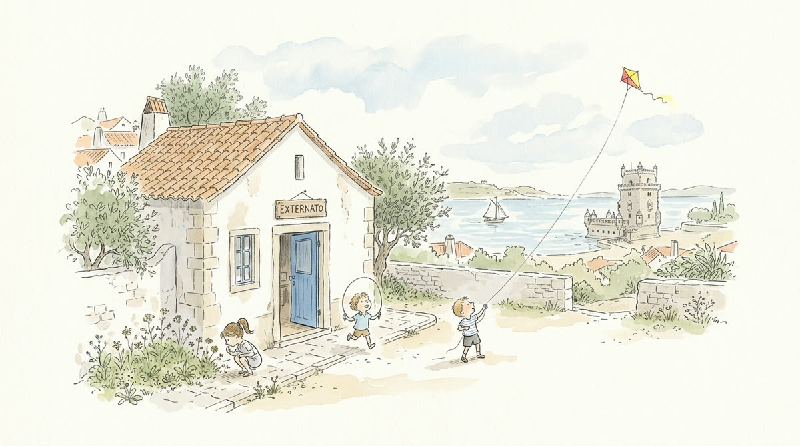
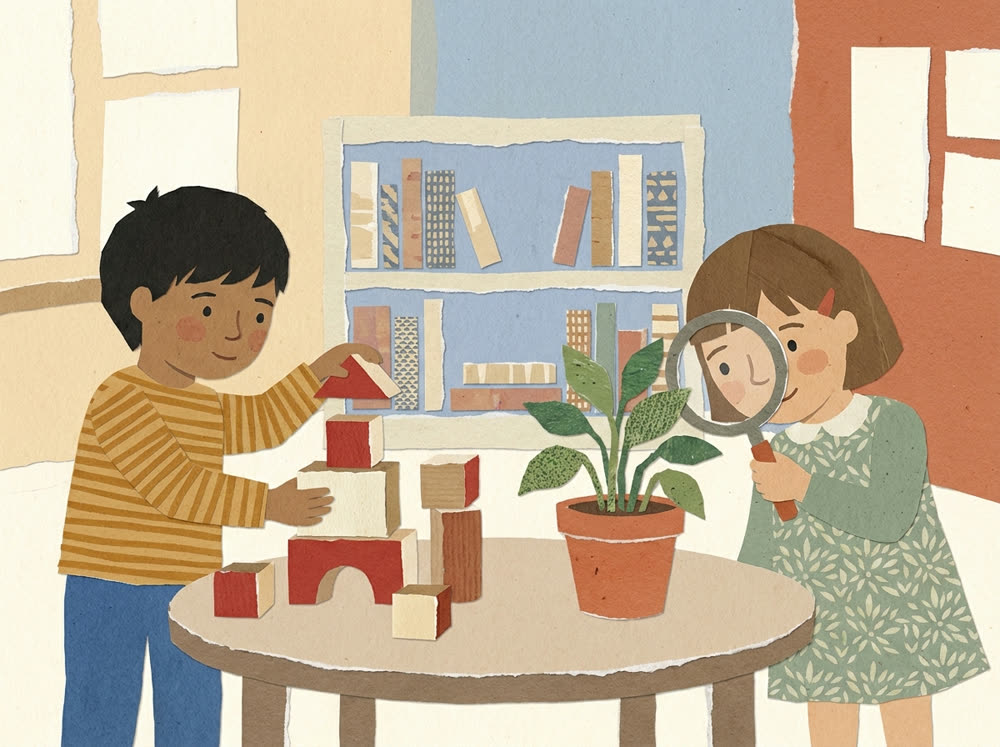

A small-by-choice kindergarten and primary school in Lisbon's Belém district: classes capped at 16, an individual plan for every child, and a whole neighbourhood of gardens, museums and river to explore.


Our own method, Aprender Mexendo: children learn through hands-on experience — building, exploring, questioning — and grow into confident, critical thinkers. We teach them how to think, never what to think.
Monthly fee (12 months): €390 for kindergarten (ages 3–5) and €425 for primary (ages 6–10), including all curriculum ateliers and hours until 17:30. Meals, extended hours and enrolment fees are itemised — no surprises. Sibling and annual-payment discounts of 5%.
Easter, summer and Christmas camps at €150/week — lunch and insurance included, open to children from other schools. In July: two beach weeks at Praia da Torre for €400.
A 45-minute visit with the head of school, on a normal school day — bring your child along. We reply within one working day.
Or call us: +351 213 011 343